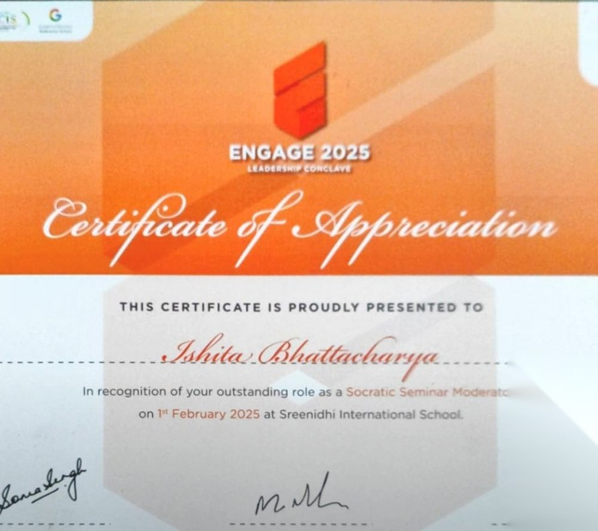

The situation
Engage is a dynamic leadership conclave at Sreenidhi International School that brings together leaders from different schools. It encourages collaboration, inspires innovation and helps build a more connected community of leaders dedicated to making a difference. On 1 February 2025 I was a moderator for its Socratic Seminar.
What I tried
A Socratic Seminar runs on questions, not answers. My job as moderator was to keep the conversation open, make room for different voices and let participants build on each other's thinking. The session explored the question: Work Ethic and Upbringing: should standards be universal?
What happened
The seminar sparked insightful conversations and brought together diverse perspectives. At the close of the event I was felicitated, and received a Certificate of Appreciation for the moderator role.
What I learned
"Leadership, as the word says, is the leader of the ship: you are the captain of the ship." Moderating reminded me that leading a conversation well means steering lightly and trusting the group.
Collaboration is the foundation of growth and progress in any society. I am grateful to my fellow moderators and the school leaders who made the day possible.

